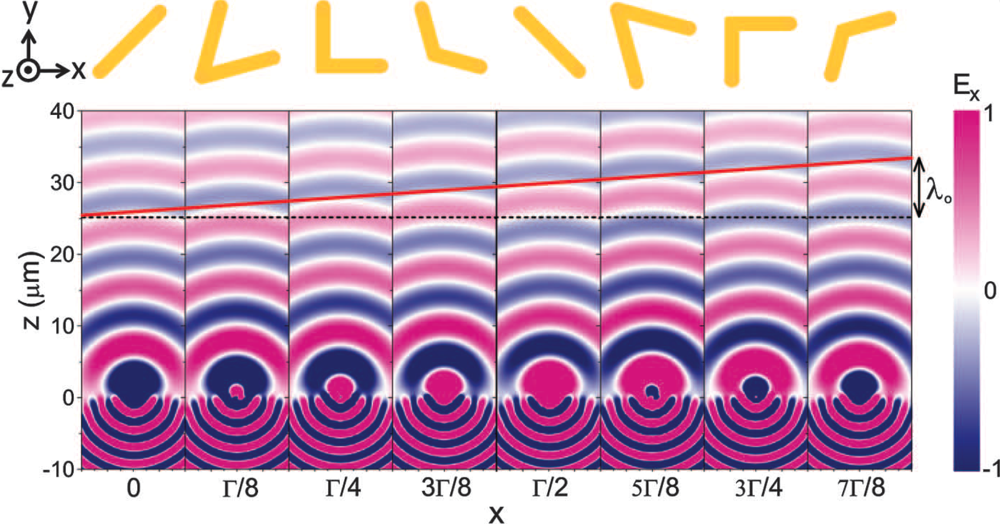
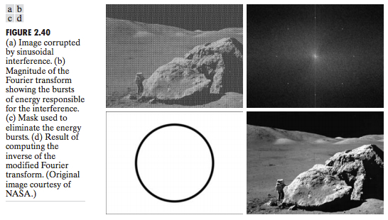
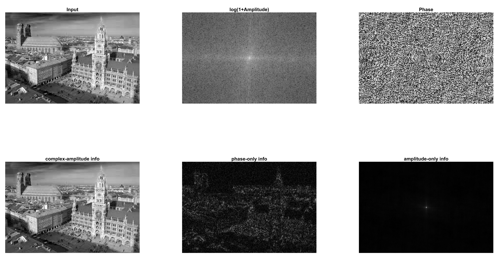

What is the motivation for metasurface holography?
- Metasurfaces provide a platform for manipulating the wavefront of output light within ultrashort distance in subwavelength resolution
- The cool thing about that is it can be used for scientific as well as industrial applications
What are metasurfaces?
- Metasurfaces consisting of arrays of plasmonic or dielectric nanoantennas these units are called meta-atoms. (-> see summary table for Haoran)
- Dielectric nanoantennas are cool because of their ability to arbitrarily
tailor the fundamental properties of the electromagnetic wavefront within ultrashort
distance such as:
- Amplitude
- Phase
- Frequency
- Polarization
- Orbital angular momentum (OAM)
What are the different types of metasurface holography?
Non-multiplexed Metasurface Holography
- Phase-only holography
- Amplitude-only holography
Multiplexed Metasurface Holography
- OAM-multiplexed holography
- INTRO TO OAM?
Other types of Metasurface Holography
- Nonlinear metasurface holography
- Harmonic generation
- Nonlinear imaging
- Nonlinear beam shaping
How do metasurfaces work?
This might be a good opportunity to give a intro to beam shaping and fourier
optics
wavefront of light in holography.
Intro to beam shaping
- In classical optics, light (EM-wave) is shaped using waveplates or lenses (for example to make devices such as microscopes/telescopes)
- Beam shaping in traditional optical elements means changing an existing wavefront of light i.e. spatial amplitude / phase profile
- Problem: Thickness of optical elements > wavelength of incident light → not useful in compact integrated optical systems.
- Solution: With the development of nanofabrication technologies, flat, ultrathin optical components (metasurfaces) can manipulate the amplitude, phase, polarization, frequency or simultaneously multiple parameters of output light in ultrashort distances with subwavelength resolution by tailoring the scattering behaviour of consisted nanostructures
- Metasurfaces are created by assembling arrays of miniature, anisotropic light scatterers (resonators such as optical antennas)
- The spacing between antennas and their dimensions are much smaller than the wavelength → the metasurfaces, on account of Huygens principle, are able to mould optical wavefronts into arbitrary shapes with subwavelength resolution by introducing spatial variations in the optical response of the light scatterers.
-
Why is it cool to arbitrarily tailor the wavefront of an electromagnetic
wave?
Answer: there are many applications in transformation optics and integrated optics (Pick 2 or 3 examples)- Fundamental studies of light-matter interactions [1–5]
- Photonic applications in optical microscopy and imaging [6–9]
- Meta-holograms for holographic displays [21–24]
Phase-only Modulation
- Yu et al - Light Propagation with PhaseDiscontinuities: Generalized Laws of Reflection and Refraction (2011)
- Yu & Capasso - Flat optics with designer metasurfaces (2014)
- In the above papers they say they can tailor both phase AND amplitude with their resonators - does it still mean they can only do one at a time? Quote: "metasurfaces based on optical scatterers enable us to engineer the spatial distribution of amplitude, phase and polarization response with subwavelength resolution."
- How is a wavefront shaped using metasurfaces?
- Metasurfaces break the dependence on the propagation effect by introducing abrupt changes of optical properties
- The essence of metasurfaces is to use arrays of antennas with subwavelength separation and with spatially varying geometric parameters (e.g.: antenna shape, size, orientation) to form a spatially varying optical response, which moulds optical wavefronts into shapes that can be designed at will
- By spatially tailoring the geometry of the resonators in an array and hence their frequency response, one can design the phase discontinuity along the interface and mold the wavefront of the reflected and refracted beams in nearly arbitrary ways
- Example: Linear Phase Discontinuity from an array of
nano-rods:

Information Processing - Limitations of Phase-only Modulation
- Often times we want to process a wavefront profile: For example, in the case of image processing, typical tasks are to increase the resolution of images or reduce noises
- We can utilize the fourier transformation (FT) to transform the image
information (gray scaled pixels) form the spatial domain into frequencies domain
and do further process like applying filters for certain frequencies before
transforming the altered image back to the spatial domian via and inverese
fourier transformation (iFT)

- If we want to process the wavefronts generated by phase-only metasurfaces using FT like in the example above, there is a major problem in the reconstuction process of the image during the iFT Problem of Phase-only modulation:
- For the reconstruction of an image both the phase AND amplitude(magitude) play an important role.
- Phase-only or amplitude-only modulation cannot fully reconstruct the original picture 